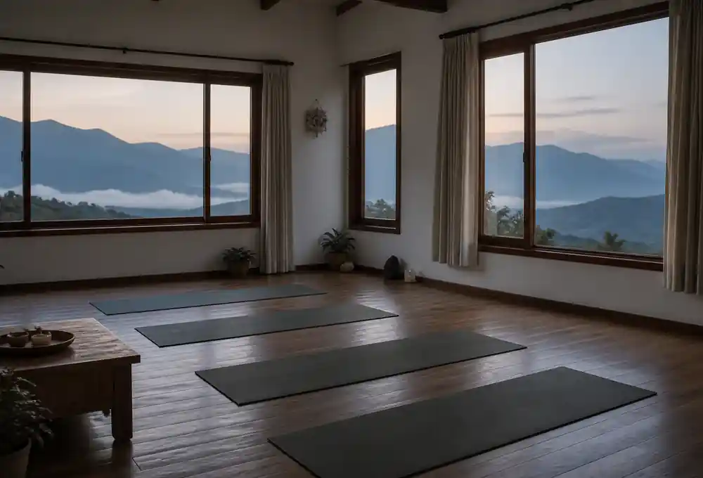
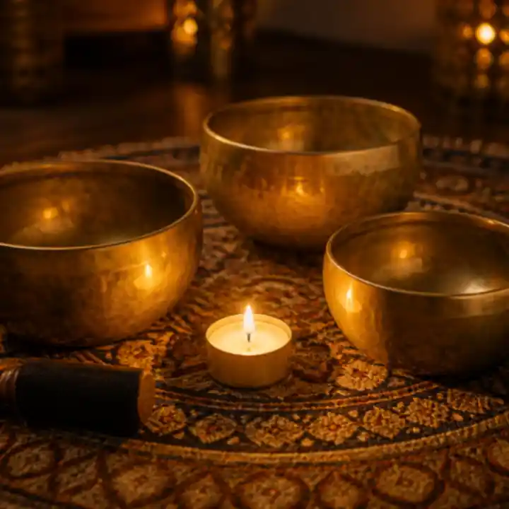
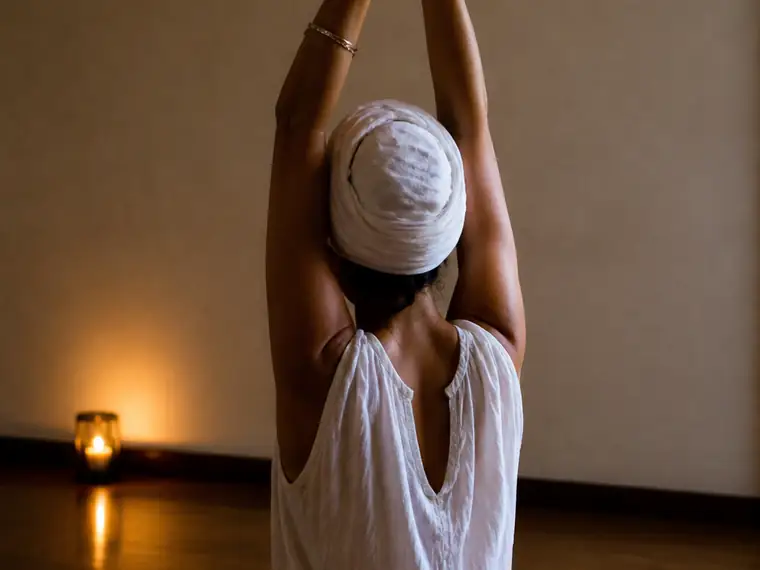
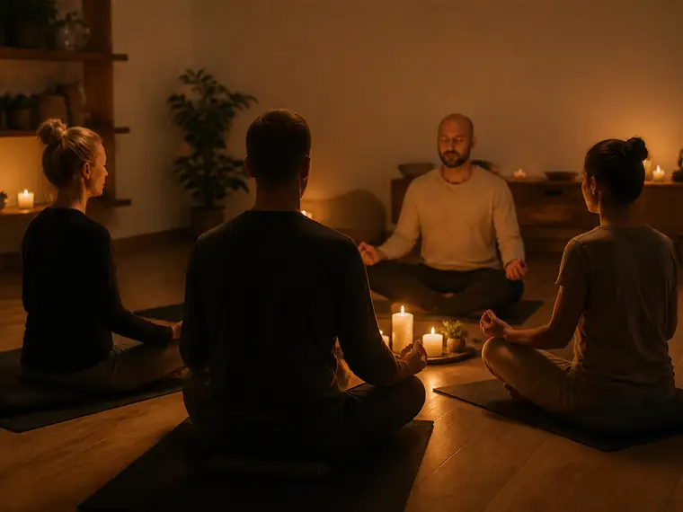
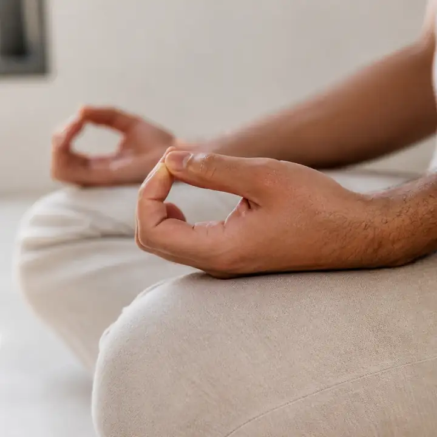
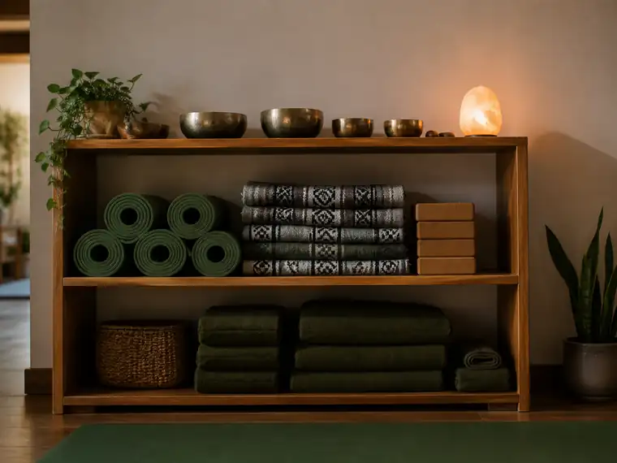

01
쿤달리니 요가
KUNDALINI YOGA
호흡·동작·소리·명상을 함께 쓰는 수련. 흰 옷과 터번은 몸과 마음을 한곳에 모으는 방식입니다.
일정 · 매장 확인

YANGJU YUYANG-DONG · SINCE THE FIRST BREATH
호흡으로 깨어나는 요가 수련.
산을 마주한 작은 스튜디오에서 몸과 의식을 천천히 살펴봅니다.
SCROLL · 호흡을 따라
별과 산과 요가는 경기 양주 유양동, 산자락 가까운 2층에 자리한 작은 요가 스튜디오입니다. 넓은 창으로는 계절마다 다른 산의 능선이 들어오고, 수업은 늘 호흡을 세는 일에서 시작합니다.
쿤달리니 요가를 중심으로 차크라 클래스, 40일 명상, 달의 흐름을 따라가는 달요가까지—한 번의 운동이 아니라 매일의 습관으로 몸과 마음을 돌보는 시간을 만들고 있습니다.
정해진 동작을 빠르게 지나가기보다, 지금의 몸에 맞춘 지도와 충분한 호흡을 함께 나눕니다.
스튜디오가 인스타그램으로 안내해 온 프로그램을 정리했습니다. 일정과 수강료는 매장 확인이 필요합니다.
01
KUNDALINI YOGA
호흡·동작·소리·명상을 함께 쓰는 수련. 흰 옷과 터번은 몸과 마음을 한곳에 모으는 방식입니다.
일정 · 매장 확인
02
CHAKRA SERIES
1번 뿌리 차크라부터 차례로 내려가며, 몸의 감각과 호흡을 차크라별로 살펴보는 시리즈 수업.
11월 1·2번 클래스 진행
03
40-DAY MEDITATION
매일 40분, 40일 동안 이어가는 명상. 8회차를 11월 8일에 시작했습니다.
참여 방식 · 매장 확인
04
MOON YOGA
달의 에너지를 따라 몸을 풀고 마음을 가라앉히는 수업. 저녁에 열린 적이 있습니다.
일정 · 매장 확인
05
SOUND & STILLNESS
싱잉볼의 울림에 기대어 몸을 눕히고 호흡을 놓아두는 시간. 수업 끝에 함께하기도 합니다.
구성 · 매장 확인
11월에는 ‘차크라와 하나됨’ 시리즈로 1번과 2번 클래스를 진행했습니다. 이어지는 클래스는 인스타그램으로 공지됩니다.
※ 1·2번 클래스는 스튜디오 인스타그램 안내(11월 14일 오전 10시 / 11월 21일 오전 9시)를 기준으로 정리했습니다. 이후 일정은 매장 확인.
정기 수업
토요일 오전
10:30 – 12:00
90분 수업으로 안내되어 있습니다. 평일 클래스와 정확한 시간표는 매장 확인이 필요합니다.
수강료
1회 수업 · 주말 클래스
매장 확인
공개된 공식 수강료가 없어 비워 두었습니다. 원하는 시간과 함께 문의해 주세요.
수강료 · 매장 확인
준비물
편한 옷 · 물
매트·쿠션 준비와 첫 수업 안내는 예약할 때 함께 확인해 주세요.
준비물 · 정원 매장 확인
화면을 따라 4초 들이마시고 4초 머물고 6초 내쉬어 보세요. 수업 전 마음을 가라앉히는 방식과 같습니다.
세 번 반복하면 몸의 속도가 조금 달라집니다.
인스타그램 피드의 소재(수련·공간·차크라 클래스·함께 나눈 식사)를 참고해 분위기를 옮겼습니다.





STILLNESS숨을 세는 동안
방은 조용해집니다
※ 위 이미지는 분위기 구현용 예시 이미지이며 실제 매장 사진이 아닙니다. 실제 제작 시 매장 사진으로 교체합니다.
주소
경기 양주시 부흥로1423번길 19
2동 2층 (유양동 229-7)
전화
주차
건물 좌측 공터 (방문 전 확인 권장)
수업 시간
토요일 오전 10:30–12:00 (90분) 안내
평일 클래스는 전화·인스타그램으로 확인
약도는 위치를 이해하기 위한 간략한 그림입니다. 정확한 길 안내는 카카오맵·구글 지도를 이용해 주세요.